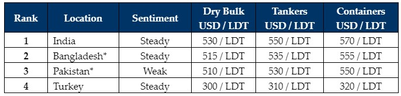

inWeekly Demolition Reports16/10/2023

As deals continue to be concluded into Alang, the Indian ship recycling sector remains ona positive footing overall, with Pakistan and (especially) Bangladesh still lagging behind. Despite steel plate prices coming off by about USD 11/Ton and the Indian Rupee weakening marginally over the course of the week, the overall outlook for India still remains positive.
Several Ship Recyclers from the sub-continent markets were gathered at the annual Tradewinds Ship Recycling Conference in Singapore this week, as they discussed market sentiments, fundamentals, and the latest regulations moving forward. There was also a healthy debate about the potentially blurry and contradictory nature of EU vs HKC Recycling and the various rules and requirements imposed on each vessel.
Owners, regulatory bodies, End Buyers, Cash Buyers, monitoring companies, Underwriters, Brokers, and various other key players from the industry, all convened for what was another good turnout at the forum, in a landmark year in which, the HKC has finally been ratified in Bangladesh, ahead of its entry into force two years later, whereafter, all yards in Chittagong must be HKC approved by a certain date in the future, in order to operate.
There remains no change in the overall inertia of all markets as steel plate prices continue to flatline in both Bangladesh and Pakistan and their respective currencies continue down the same trajectory as last week. Even Turkey spent much of the week as last, with steel plates that were slightly weaker and still without any fixtures to support local demand.
In terms of supply, expect the usual flow of feeder Containers and Dry Bulk vessels as we approach the end of the year, at what is perceived to be historically firm recycling levels in the low to mid 500s/LDT.
Overall, even though the volumes of recycling tonnage remain muted, many in the industry are expecting supply to pick up going into 2024, and all of the recycling markets are firing (hopefully) on all cylinders once again, with the ability to open L/Cs with greater security and efficiency than we have seen thus far this year (especially in Pakistan and Bangladesh).
For week 41 of 2023, GMS demo rankings / pricing for the week are as below.

📄 Download PDF: Ship-recycling-market-insight-week-41-2023-Forum-Fundamentals.pdfSource: GMS,Inc. ,https://www.gmsinc.net/gms_new/index.php/web